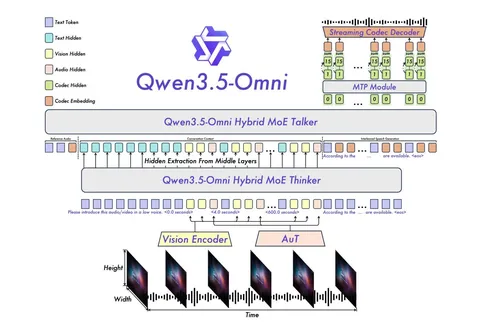

Сегодня разбираем техрепорт Qwen3.5-Omni. Авторы репортят SOTA на множестве задач и рассказывают, что положили в трейн 100 миллионов часов аудиовизуального контента. Правда, к сожалению, модели не выложены в опенсорс и доступны только в API.
По сути, здесь взяли текстовые модели Qwen3.5 и добавили к ним мультимодальные возможности. Начнём с того, чего удалось добиться по сравнению с предыдущей версией Qwen3 Omni, которую мы разбирали ранее.
1. Управляемый аудиовизуальный кепшенинг — модель умеет описывать аудиовизуальную информацию, понимает, что именно хотим узнать о звуковой дорожке или видео.
2. Хорошее реалтайм-взаимодействие — понимает структуру диалога, когда пора что-то сказать, когда прерывают. (Деталей реализации в репорте мало — сказано только, что это сделано на RL-стадии).
3. Способность нативно работать как омнимодальный агент — тоже получена на стадии RL.
В плане архитектуры — это по-прежнему Thinker-Talker. Thinker — MoE-модель побольше, которая умеет получать информацию из аудио- и картиночного энкодеров и маппить разные модальности в единое эмбеддинговое пространство. Оттуда Talker, MoE-модель поменьше, генерирует текстовые и аудиотокены.
Для аудио используется 16-уровневый RVQ-кодбук. Сам Talker генерирует только нулевой уровень RVQ, а настроенный поверх него MTP-модуль разворачивает его в остальные 16 уровней кодека.
Thinker способен работать с последовательностями до 256К токенов. Туда помещается до 10 часов аудио или 400 секунд видео 720p с частотой 1 FPS. Видео при этом представлено отдельно кадрами и отдельно аудио — «честного» видео на вход модель не получает. Поверх конструкции есть декодер, который умеет «разговаривать».
Несколько интересных технических деталей.
Во-первых, аудиоэнкодер обучали на ASR-задачах на 40 млн часов аудио. Для длинных аудио и видео одного позиционного эмбеддинга оказалось недостаточно, поэтому в последовательность дополнительно вставляют текстовые временные метки — сколько секунд прошло от начала аудио или видео. Авторы говорят, это заметно улучшает качество на длинных контекстах.
Во-вторых, для генерации речи добавили ARIA (Adaptive Rate Interleave Alignment). При совместной генерации текста и аудио возникает вопрос, сколько аудиотокенов должно приходиться на каждый текстовый токен. Фиксировать это число неудобно: соотношение зависит, например, от языка и токенизаторов. Поэтому в ARIA его определяют отдельно для каждого семпла и при генерации чередуют текстовые и аудиотокены так, чтобы сохранять нужную пропорцию. Так можно собрать оба потока в одну последовательность и при этом сохранить стриминг.
Ещё одно отличие от предыдущей версии — собственный промпт у Talker. Благодаря ему можно управлять голосом и делать zero-shot voice cloning.
Что касается обучения, сначала отдельно обучают мультимодальную часть, оставляя текстовую LM замороженной (адаптер, затем энкодеры). После размораживают всю модель и продолжают претрейн уже на 4 трлн токенов.
На посттрейне отдельно обучают экспертов под выбранные задачи с помощью SFT и RL, а затем дистиллируют их в общую модель. Используют on-policy-дистилляцию, например, для audio-to-text пытаются перенести качество текстового эксперта в мультимодальную модель. На следующей стадии добавляют мультитёрн-диалоги и агентные сценарии, но подробностей этой части в репорте мало.
Talker обучают отдельно на 20 млн часов речи. Здесь тоже несколько стадий: обучение на мультимодальном контексте, добавление промптов для управления речью, а затем посттрейн с DPO и RL.
Из практически интересного — Qwen3.5-Omni-Plus показывает лучший результат на русском в ASR-бенчмарке FLEURS среди приведённых в таблице моделей, включая GPT-4o. Так что модель выглядит интересно в том числе как источник синтетической разметки для обучения ASR.
Всеволод Ковшов
